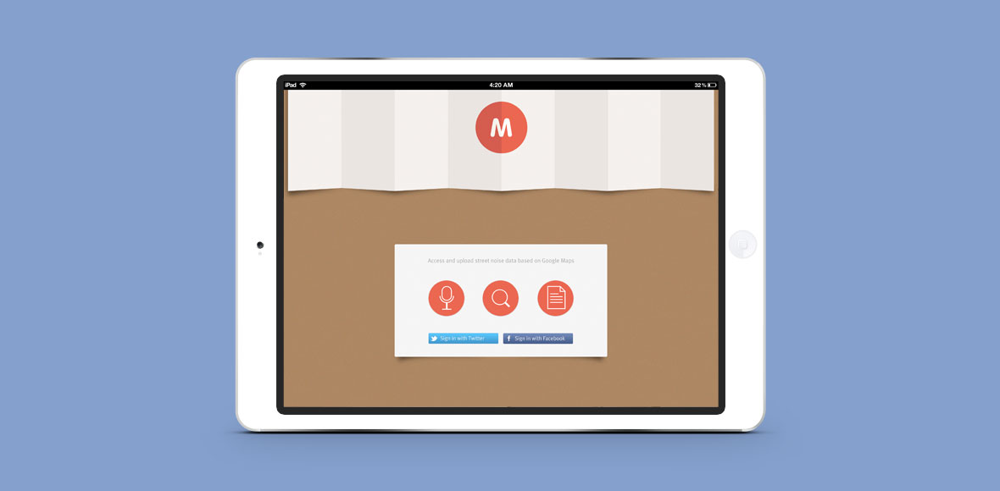
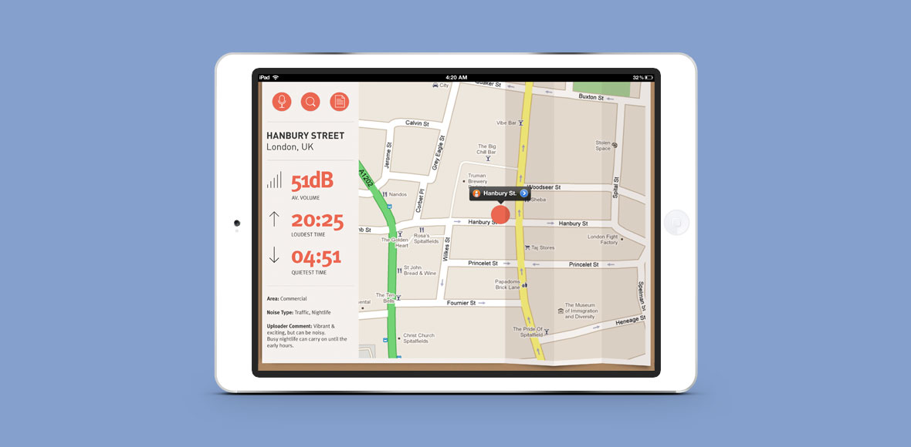
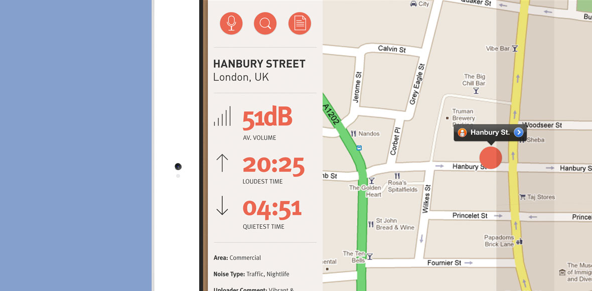
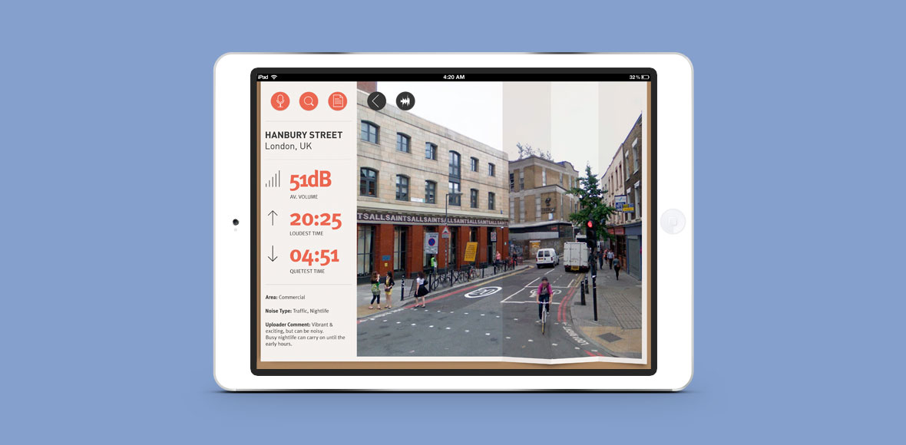
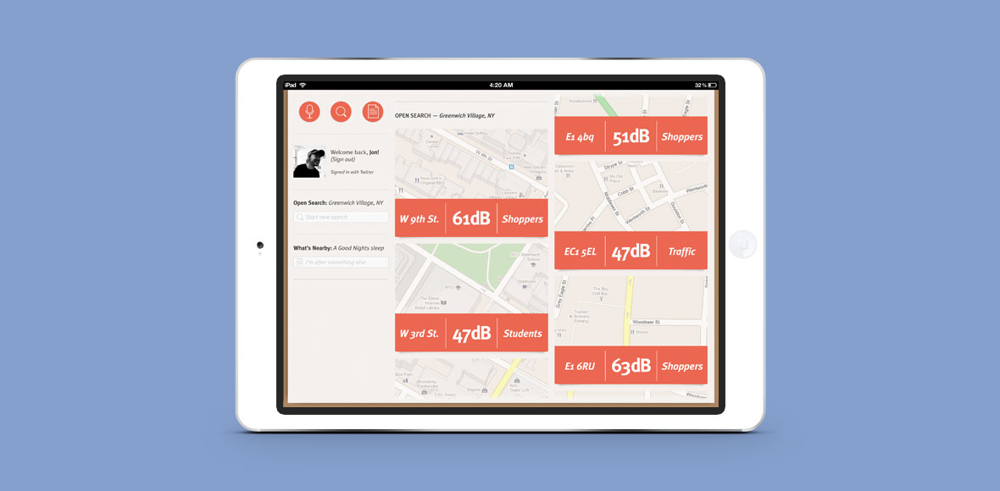
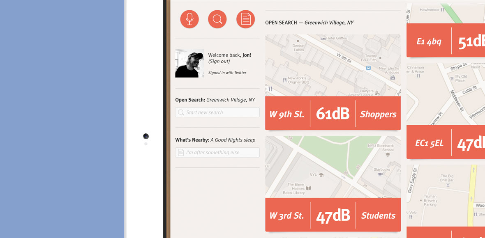

Mapply was born out of a combination of curiosity and necessity. What if Google Maps not only let you look at an area, but hear it as well? This became all the more important when I was house hunting in a new city — what's that road like? Is it near a night club? A train line?
Mapply was an iPad app that let users access street noise data as a layer on top of Google Maps. It presented a full picture of an area, letting you explore and learn.
Users could also record and add their own sound, contributing to an online database
 I designed the product, including feature set, user experience, UI and visual identity.
  